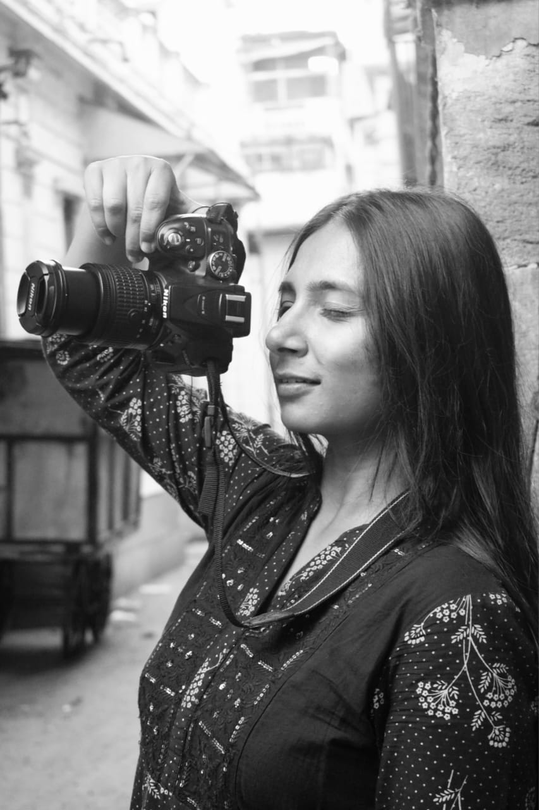

Some days im sketching, Some days I map human behaviours.
hi, my name is Nishtha
Im a visual Communication Designer and a User Researcher
Design is a sensory and reflective process one of perception, analysis,
and creation. It enables an immersion into diverse beliefs, cultures, and
perspectives that surround me. With every experience, I find myself in a
continuous journey of becoming more sensitive to the shifting world and
its stories.
